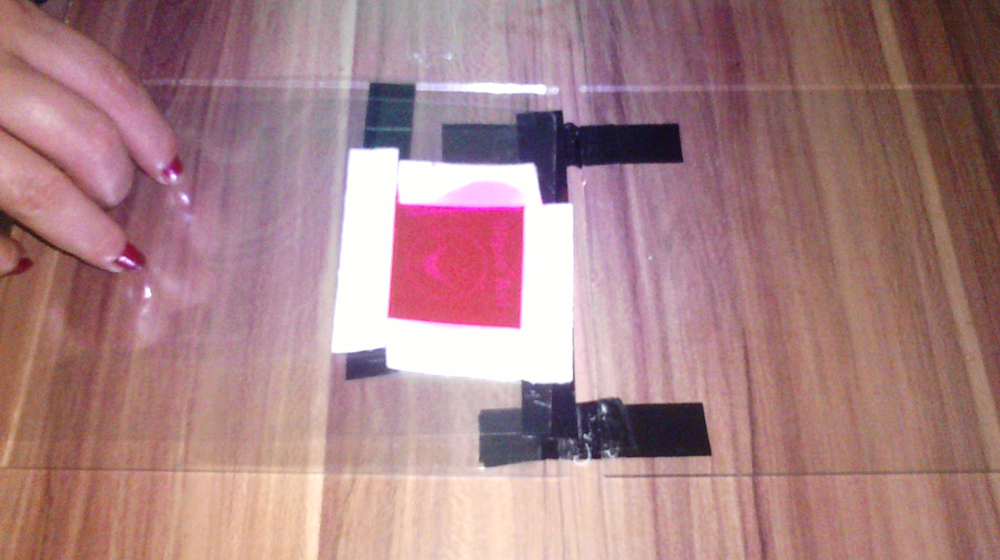

MONTAJE
HACER MONTAJE DEL SISTEMA
Aca se explicara de una manera simple y economica de como puede efectuarse el montaje del sistema de revelado del fotopolimero usando para ello maquinas de revelado de minimo con un minimo de potencia de 36watt.
Recuerde que siempre puede acceder a la lista de materiales basicos necesarios para hacer el montaje, eso puede consultarlo accediendo de manera rapida
PASO A PASO
- Unir los 2 vidrios usando para ello 2 pedazos de teipe como haciendo un par de bisagras, la idea es que pueda abrirse y cerrarse de manera completa.
- En uno de los vidrios colocar el negativo, dicho negativo debe colocarlo de manera que usted pueda leer las letras, es decir lo que comunmente se le dice al derecho e inmovilizarlo con un pedacito de teipe.
- Recortar un pedacito de CoverFlim o de acetato para impresoras laser y cubrir el negativo para protegerlo, sobre ese protector del negativo es donde debe colocar el teipe doble faz y hacer una especie de marco alrrededor del negativo, esta accion es la que delimitara el area donde se hechara el fotopolimero.
- Ya esta quedando colocar la cantidad necesaria del fotopolimero, la cantidad recomendada es la que no desborde el ancho del teipe doble faz.
- Ya nuestro montaje esta casi listo, solo queda colocar otro pedazo de lamina CoverFlim o lamina de acetato para impresora laser, la finalidad del primero es la de proteger el negativo del fotopolimero y de este segundo es de que el fotopolimero no se pegue al vidrio, ya que hay que unir los vidrios, cerrando la especie de bisagra creada con el teipe en el paso 1. 
-
Ahora ya nuestro sistema esta listo para ir a la Maquina, hay Maquinas que iluminan por ambas caras del vidrio, pero las mas comunes iluminan solo por una cara, en este caso se recomienda contar con un cronometro para no pasarse el tiempo de exposicion,
ya que 2-3 segudos de mas pueden afectar el trabajo de revelado. Los tiempo de exposicion por cara son suministrados por cada fabricante. Para maquinas de 36watt los tiempos de exposicion recomendados son:
SELLOS PEQUEÑOS:
Tiro o Cara Frontal: 15 Segundos +/- 5
Retiro o Cara Trasera: 28 Segundos +/- 5SELLOS MEDIANOS:
Tiro o Cara Frontal: 16 Segundos +/- 5
Retiro o Cara Trasera: 29 Segundos +/- 5SELLOS GRANDES:
Estos tiempos pueden variar segun la humedad e iluminacion del espacio de trabajo, siempre se recomienda ir probando y adaptando los tiempos adecuados necesarios en cada uno de los espacios de trabajo. Tome siempre en cuenta que toda la goma se endurece en aproximadamente 45-60 segundos segun la cantidad de fotopolimero a tratar.
Tiro o Cara Frontal: 17 Segundos +/- 5
Retiro o Cara Trasera:33 Segundos +/- 5 - Sacar el montaje de la maquina y proceder a retirar el CoverFlim o Acetato con el Fotopolimero, retirar los excesos de Fotopolimero e incorporarlo al envase nuevamente ya que el mismo puede ser utilizado mas adelante en otro montaje.


Si desea puede ver un paso a paso de las imagenes en tamaño grande haciendo click
AQUI PARA VER PDF